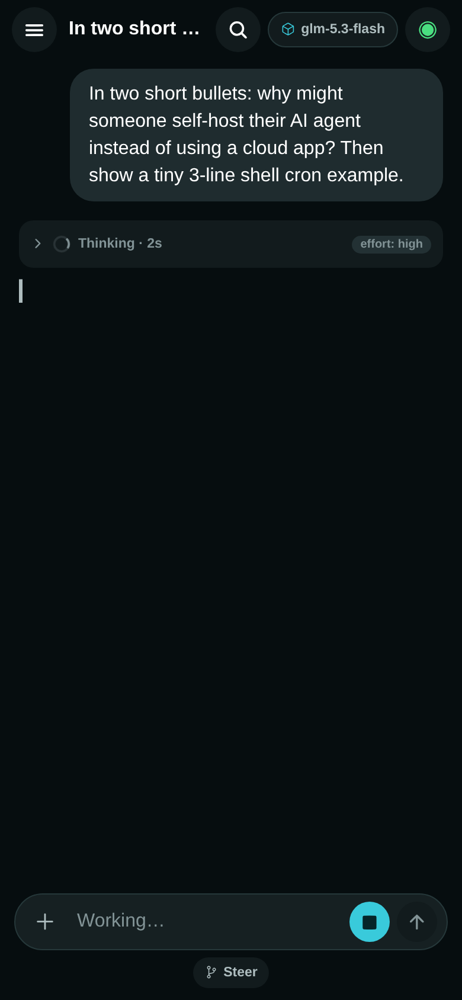

Your own AI. In your pocket.
Relay is a free, open-source phone app for the AI agent running on your own computer. Your phone talks straight to it: no platform in between, no accounts, no monthly fee.

How it fits together
No cloud, no middleman. Two things you own, talking to each other. The agent is the thinker; the gateway is its front door; Relay is the phone in your hand.
An agent lives on your computer
The open-source Hermes agent runs on a machine you control: your laptop, an old desktop, even a small server. It holds your AI account keys (so they stay on your machine) and does the actual thinking.
Relay is its remote control
Install Relay on your phone, scan one QR code, and the two are paired. From then on the app opens a direct line to your agent whenever you use it.
Talk from the sofa, or from another city
At home it just works. Away from home a free tool like Tailscale keeps the line open safely. Same app, same agent, anywhere.
Why not just message a bot on Telegram?
Honest question. The Hermes gateway even ships a Telegram bot, and it's a fine way to start. Here's what changes when the phone gets an app of its own.
A bot inside a chat app
Your messages ride a platform on the way home.
Relay
A direct line to your own machine.
Both are front doors to the same agent, and you can happily run them side by side. Relay is for when your phone deserves better than a text box.
What it feels like to use
Not promises: the actual things the app puts on your screen.
You watch it think
Answers stream in word by word. When the agent reasons first, the thinking sits in a little chip you can open, with how long it took and how fast it read. Nothing is hidden, nothing is noisy.
A live reply, mid-thought
Permission is a tap, not a reply
When your agent wants to install something, spend something, or touch something sensitive, a card comes to your phone. Approve it from the kitchen. The question waits politely if you're in another chat.
An approval, as it actually arrives
Chores it runs while you sleep
Set a job once ("every evening at six, summarize what changed in my repo") and the agent runs it on your computer even with the app closed. Pause it, edit it, run it now: switches, not commands.
One automation, on duty
Two computers, one app
Pair your desk and your laptop, even the same machine twice, once for home and once for the road. Relay remembers them all and reconnects to the last one on its own.
Settings, your computers list
Every skill your agent has
Type a slash and Relay asks your agent what it can do (commands, skills, models), straight from the source. Your agent learns a new trick tonight, your phone knows it tonight. No app update needed.
The catalog, served by your agent
An evening project. Yours forever.
The setup guide walks the whole way: install the agent, put Relay on your phone, scan one code.
Start the setup guide